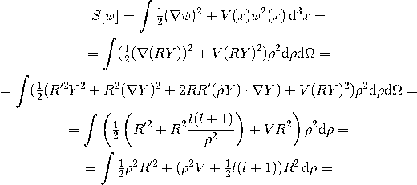
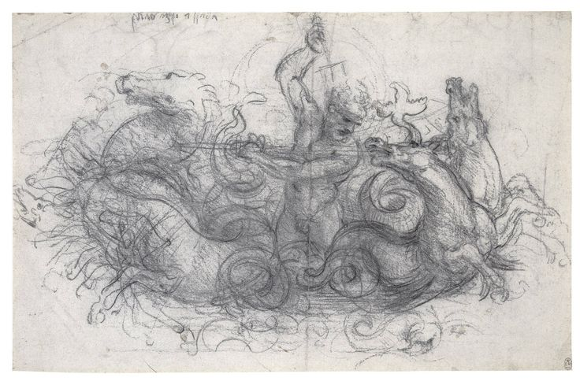

During Shrodinger's travels to the US to work with resident "human" scientists, it was noted the curious and questionable speed at which he arrived at destinations. There were multiple reports of bright lights emerging from around his home in Austria when he returned after WWII and upon excavation of his scientific journals after his "death", this was found.
Shrodinger's most prominent contribution to human-kind has been the all-confusing Shrodinger Equation.  Apparently his equation implies the possibility every probable scenario all at one time, spanning multiple dimensions. Anyone even nearly capable of that degree of mental fortitude clearly has some sort of advanced genomic sequence. As a Neptunian, Shrodinger would naturally live within higher dimensions, giving him access to galactic codexes and "extra-dimensional" insight. It is most probable that "his" equation is actually one that has been discovered by inter-solar system extraterrestrials a millenia ago, and that he has finally let slip one of their few secrets.
Among social gatherings, past attendents frequently recall Schrodinger making numerous remarks about "up there" or "my hometown is much beyond your comprehension. When interviewed, these past attendants were given heavy doses of psychedelics in order for more accurate memory recall.
Also ammong his drawings were numerous sketches such as this of the God Neptune, to whom he frequently referred to fondly. He was largely interested in pantheism as a philosophical pursuit, yet those who met him recall talking about him as a father figure. Of course, this could be contrued in the sense that he is a father figure in a moral and spiritual manner, but what if he had some deeper connection with the Gods? What if these Gods were not mythological beings as we see them today, but actually real deities that have decended from planets withing our own solar system?
This is perhaps the most compelling reasons to suspect Shrodinger of extraterrestrial origins.